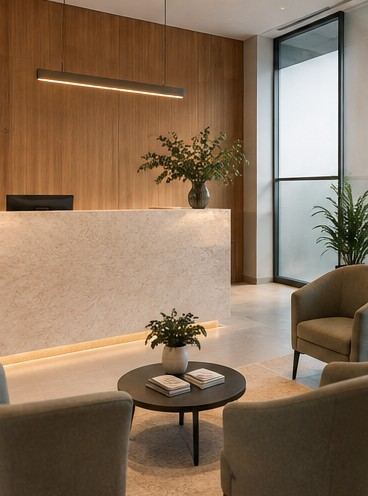
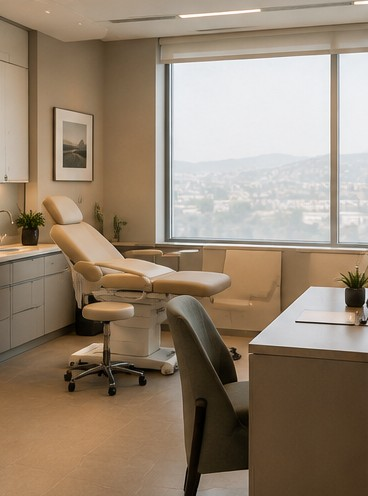
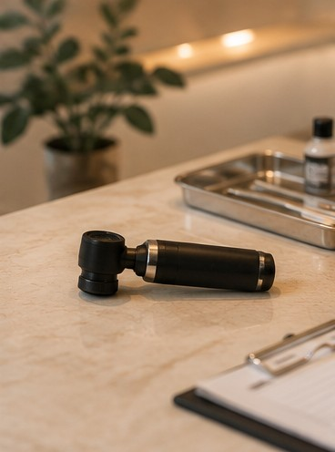
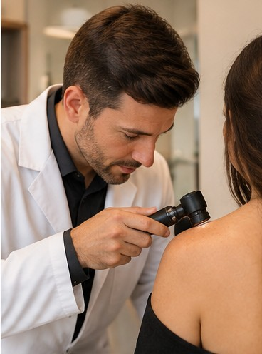

Acne
Avaliação de diferentes formas de acne e acompanhamento conforme a necessidade de cada paciente.
Agendar avaliaçãoDermatologia clínica — Jaraguá do Sul, SC
Atendimento dermatológico individualizado para avaliação e acompanhamento da saúde da pele, cabelos e unhas.
Dr. Rafael Monteiro · Dermatologista
Especialidades
A avaliação médica permite investigar alterações da pele, cabelos e unhas e definir a conduta adequada para cada caso.
Avaliação de diferentes formas de acne e acompanhamento conforme a necessidade de cada paciente.
Agendar avaliaçãoInvestigação das possíveis causas da queda e avaliação do couro cabeludo.
Agendar avaliaçãoAvaliação de alterações como vermelhidão, coceira, descamação e irritações da pele.
Agendar avaliaçãoAvaliação dermatológica de manchas, pintas e outras alterações observadas na pele.
Agendar avaliaçãoInvestigação de alterações na aparência, textura, crescimento ou coloração das unhas.
Agendar avaliaçãoConsulta para avaliação geral da pele e orientação sobre cuidados e proteção solar.
Agendar avaliaçãoOs conteúdos apresentados são informativos e não substituem uma avaliação médica. O diagnóstico e a indicação de tratamento dependem da avaliação individual do paciente.
Dr. Rafael Monteiro · em consulta
Conheça o médico
O Dr. Rafael Monteiro atua em dermatologia com foco na avaliação individual de cada paciente. Durante a consulta, busca compreender o histórico, os sintomas e as necessidades apresentadas antes de definir a melhor conduta para cada situação.
Dr. Rafael Monteiro
Dermatologista
CRM 00.000/SC · RQE 00000 — substituir pelos dados reais de registro, formação e especializações antes da publicação.
Como funciona a consulta
Você entra em contato pelo WhatsApp e escolhe um horário disponível.
O médico conversa com você sobre suas queixas, histórico e necessidades.
É realizada a avaliação dermatológica adequada à situação apresentada.
Quando indicado, o médico orienta os próximos passos e o acompanhamento necessário.
As avaliações desta clínica ficam publicadas e verificadas no perfil do Google. Confira diretamente por lá antes de agendar.
Ambientes

Recepção
Consultório
Equipamentos
Avaliação dermatológicaPerguntas frequentes
Não. O atendimento é particular e você pode marcar sua consulta diretamente pelo WhatsApp, sem necessidade de encaminhamento de outro médico. Ao final da consulta, você recebe nota fiscal e recibo detalhados, que podem ser usados para pedir reembolso ao seu plano de saúde, caso ele ofereça essa modalidade.
Leve um documento oficial com foto e, se tiver, exames dermatológicos anteriores, receitas em uso e uma lista dos produtos ou medicamentos que você aplica na pele atualmente. Esses itens ajudam o médico a montar seu histórico com precisão já no primeiro atendimento.
A primeira consulta dura, em média, 40 minutos — tempo dedicado à avaliação completa da pele, do histórico clínico e das suas dúvidas. Consultas de retorno costumam ser mais objetivas, com cerca de 20 minutos.
O atendimento é exclusivamente particular, sem vínculo direto com operadoras de convênio. Você paga a consulta no momento do atendimento e recebe nota fiscal e recibo para solicitar reembolso ao seu plano, conforme a cobertura do seu contrato.
Sim, esse é o canal oficial de agendamento. Clique em "Solicitar consulta", informe seu nome e o motivo da consulta, e a equipe responde com os horários disponíveis normalmente em até um dia útil.
Sim. Além da avaliação diagnóstica, a dermatologia clínica inclui procedimentos ambulatoriais como biópsia de pele e remoção de lesões benignas, quando indicados. A necessidade e o tipo de procedimento são sempre definidos durante a consulta, após o exame da região afetada.
Contato e localização
| Segunda a sexta | 8h às 18h |
| Sábado | 8h às 12h |
| Domingo | Fechado |